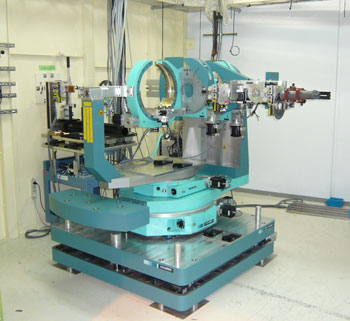

 |
BL46XUの多軸回折計は実験ハッチ内上流側に設置されている。基本的にはアナライザー結晶用２軸ゴニオ付きの４circleゴニオで， ω軸（結晶角），２θ軸（回折角）がそれぞれ垂直回転と水平回転の２組装備されているHuber製の８軸回折計である。 χクレードルはC型の物を採用している。X線検出器はNaIシンチレーションカウンター（0次元検出器）を標準使用しているが、 オプションとして2次元ピクセル検出器PILATUSも利用可能である。
現在，当装置の主なターゲットは，微小角入射Ｘ線回折およびＸ線反射率測定による薄膜又は表面の構造解析， 時分割in-situX線回折である。
詳細については こちら（JASRI公式ページ） を参照下さい。
回折計制御ソフト： SPEC（CSS社製）
スペックコマンドリスト
プラットフォーム ： Windows2000
解析ソフト ： EXCEL、 IGOR、 ImageJ、 RIGAKU製反射率解析ソフトGXRR
通信ソフト（回折計制御コンピュータとの通信用) ： Tera Term Pro
LogPlot(SPECデータ整理用ソフト)
（注）e-mailアドレスは＠マーク以下を省略していますので、
アカウントの後に@spring8.or.jpを付けてください。
小金澤 智之
（財）高輝度光科学研究センター(JASRI)
〒679-5198 兵庫県佐用郡佐用町光都1丁目1-1
Phone : 0791-58-0832
PHS: 3377
FAX : 0791-58-0830
e-mail : koganeza
アカウントの後に@spring8.or.jpを付けてください。
小金澤 智之
（財）高輝度光科学研究センター(JASRI)
〒679-5198 兵庫県佐用郡佐用町光都1丁目1-1
Phone : 0791-58-0832
PHS: 3377
FAX : 0791-58-0830
e-mail : koganeza